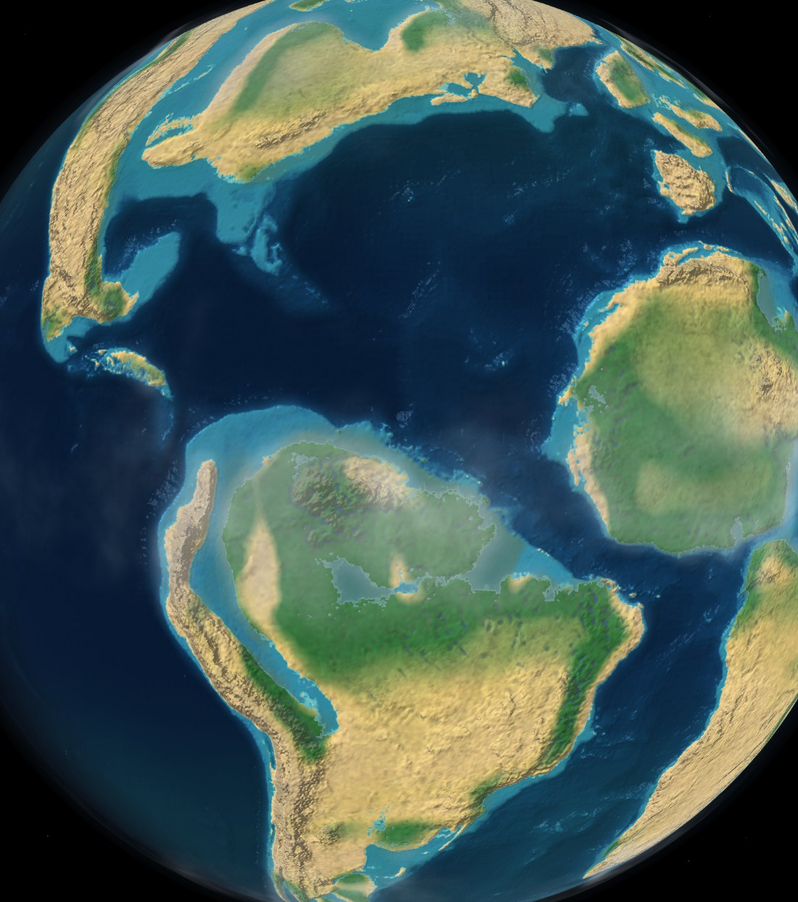

Interactive deep-time model
Tectonic Earth
An interactive reconstruction of Earth's surface from 1,000 million years ago to 250 million years ahead, built from published plate motions and a climate model and rendered from physical data fields rather than pre-made images.

90 Ma · Late Cretaceous · the Atlantic opening
Each moment in the timeline is stored as physical fields — elevation, rainfall, and plate motion — and the surface is assembled in a GPU shader at render time rather than played back as finished images. Interpolating the elevation field between keyframes lets coastlines migrate as sea level changes, relief is shaded per pixel, and the view holds detail from the whole globe down to a single valley.
One planet, two views
An equal-area map, or a body in space


The timeline
Rodinia to the next supercontinent
Moving through the timeline changes the whole configuration: Rodinia and a single world ocean at 1000 Ma, the Cryogenian glaciations, Pangaea's arid interior, the opening of the Atlantic, and — beyond the present — the assembly of a future supercontinent under a brightening Sun. Climate, sea level, ice, CO2 and O2 follow published estimates for each interval. The deep past and deep future are the least constrained; the future is shown as one plausible scenario, with the biosphere contracting to refugia rather than disappearing.
What you can see
A whole Earth system, modeled
Real plate motion
Ridges, trenches and transforms from the Merdith 2021 rotation model — moving continuously, keeping their names, ocean floor as active as the continents.
Climate & biomes
Winds carry moisture inland and dry the interiors; mountains cast rain shadows; vegetation follows rainfall against evaporation — so Pangaea grows a desert heart on its own.
Photoreal terrain
Per-pixel relief and hillshade, slope-bare rock on mountain flanks, ocean bathymetry, and glaciers from a snowline that answers to both cold and snowfall.
Rivers, marshes & deltas
Modeled drainage read from the lows of the reconstructed terrain and weighted by rainfall — channels in the valleys, marshes in wet flats, deltas at wet coasts.
Sky & sea
A cloud layer driven by each era's own rainfall (tropical convergence, storm tracks, clear desert belts), a day/night terminator, limb haze, and era-appropriate ocean colour.
Deep-time events
73 confirmed impact structures and 37 large igneous provinces, each carried along its plate toward where that crust sat at the time (an estimate that recovers direction better than distance).
The fossil record
Characteristic life per region and interval — flora and fauna drawn from the record, with hand-made illustrations — plus named seas, deserts, plateaus and lakes.
The future
Solar brightening and the next supercontinent — the most uncertain stretch of the timeline, shown as one plausible scenario with the land biosphere thinning toward refugia.
Method
Drainage, marshes, and deltas
Individual ancient river courses are not known, so none are drawn from a map. Drainage is instead derived from data the model already carries: the topographic lows of the reconstructed elevation field, weighted by local rainfall. Narrow incised lows are rendered as river channels, broad wet flats as marsh, and the same at a coastline as a delta plain. The resolution is valley-scale (tens of kilometres), so the result represents major drainage rather than individual tributaries, and it becomes less certain in deeper time as the underlying topography does.
As a check, the same method applied to the present-day elevation model places channels in the real Himalayan valleys draining to the Bay of Bengal. These are modeled drainage patterns, not mapped rivers.

Under the hood
How it's built
Ships elevation, rainfall and motion textures per 5-Myr keyframe; a GLSL shader interpolates them and recomputes temperature, relief, biomes, water and sky per pixel — nothing is a pre-baked picture.
The Merdith et al. (2021) full-plate rotation model, resolved with pyGPlates into continuously-closing plate topologies and classified boundaries.
Scotese & Wright PALEOMAP paleo-elevation models for 0–540 Ma; an authored craton composite deeper in the Precambrian; the present terrain rotated forward for the future.
Temperature from latitude, elevation and an era anomaly; rainfall from wind-driven moisture transport, orographic rain shadow and Budyko humidity — calibrated to published GMST, CO2 and O2 curves.
Solar luminosity from the Gough (1981) standard model (−8% at 1000 Ma, brighter ahead); the deep future calibrated to Farnsworth et al. (2024) on the same Pangaea Ultima reconstruction.
Impact structures vetted against the Impact Earth database and Schmieder & Kring (2020); fossil-record biota per region and interval, each event and label written up by hand.
Sources
Data and references
Merdith, A. S. et al. (2021). Extending full-plate tectonic models into deep time. Earth-Science Reviews 214, 103477. Zenodo 10.5281/zenodo.4485738 · CC-BY 4.0
Scotese, C. R. & Wright, N. (2018). PALEOMAP Paleodigital Elevation Models (PaleoDEMs). Zenodo 5460860 · CC-BY 4.0
Farnsworth, A. et al. (2024). Climate extremes likely to drive land mammal extinction during next supercontinent assembly. Nature Geoscience 17, 1109–1116.
Gough, D. O. (1981). Solar interior structure and luminosity variations. Solar Physics 74, 21–34.
Bird, P. (2003). An updated digital model of plate boundaries (PB2002). Geochem. Geophys. Geosyst. 4(3) — the present-day network the reconstruction is pinned to.
Impact Earth database (Osinski et al., Western University) and Schmieder & Kring (2020), cross-checked against primary papers.
pyGPlates / GPlates for reconstruction; three.js + GLSL for the real-time globe.
PhyloPic (phylopic.org) — organism silhouettes traced by its contributors from skeletal reconstructions and life restorations. Used only under CC0, Public Domain Mark or CC-BY; share-alike and non-commercial images are excluded. Every contributor whose work appears is named below.